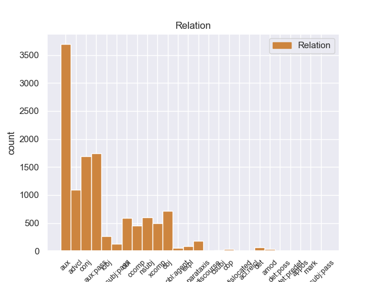
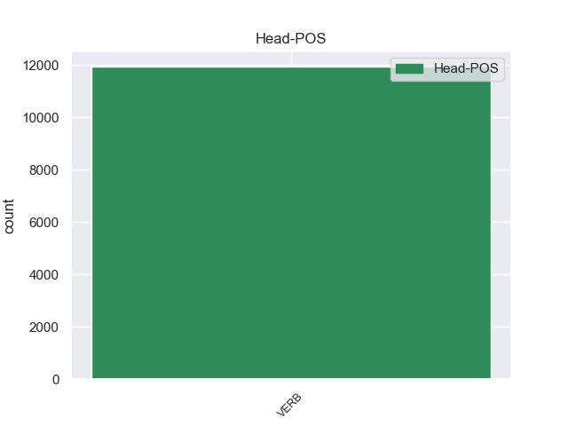
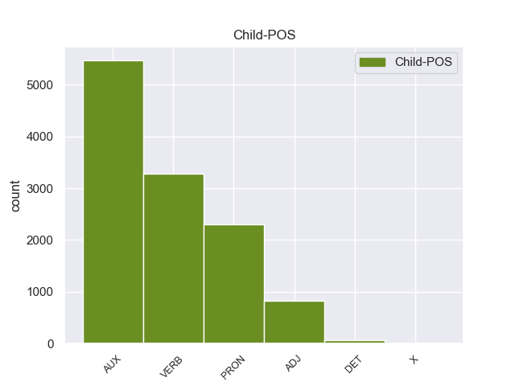

Distribution of features within this leaf



Agreement Rules sorted by frequency.
- When the dependent token is the nominal modifier(nmod) of the head token, and the dependent token is PRON.
1 Por _ _ _ _ 0 _ _ _
2 si _ _ _ _ 0 _ _ _
3 a _ _ _ _ 0 _ _ _
4 distanza distanza NOUN S Gender=Fem|Number=Sing 0 _ _ _
5 , _ _ _ _ 0 _ _ _
6 quel _ _ _ _ 0 _ _ _
7 tanto tanto PRON PI Gender=Masc|Number=Sing|PronType=Ind 4 nmod _ _
8 che _ _ _ _ 0 _ _ _
9 basta _ _ _ _ 0 _ _ _
10 per _ _ _ _ 0 _ _ _
11 mettere _ _ _ _ 0 _ _ _
12 bene _ _ _ _ 0 _ _ _
13 a _ _ _ _ 0 _ _ _
14 fuoco _ _ _ _ 0 _ _ _
15 e _ _ _ _ 0 _ _ _
16 osservare _ _ _ _ 0 _ _ _
17 che _ _ _ _ 0 _ _ _
18 le _ _ _ _ 0 _ _ _
19 cose _ _ _ _ 0 _ _ _
20 non _ _ _ _ 0 _ _ _
21 sono _ _ _ _ 0 _ _ _
22 esattamente _ _ _ _ 0 _ _ _
23 come _ _ _ _ 0 _ _ _
24 credevi _ _ _ _ 0 _ _ _
25 che _ _ _ _ 0 _ _ _
26 fossero _ _ _ _ 0 _ _ _
27 . _ _ _ _ 0 _ _ _
1 @user1 _ _ _ _ 0 _ _ _
2 Quindi _ _ _ _ 0 _ _ _
3 non _ _ _ _ 0 _ _ _
4 avete _ _ _ _ 0 _ _ _
5 in _ _ _ _ 0 _ _ _
6 mente _ _ _ _ 0 _ _ _
7 qualcuno qualcuno PRON PI Gender=Masc|Number=Sing|PronType=Ind 0 _ _ _
8 di _ _ _ _ 0 _ _ _
9 preciso preciso ADJ A Gender=Masc|Number=Sing 7 nmod _ _
10 che _ _ _ _ 0 _ _ _
11 lo _ _ _ _ 0 _ _ _
12 discrimina _ _ _ _ 0 _ _ _
13 a _ _ _ _ 0 _ _ _
14 il _ _ _ _ 0 _ _ _
15 contrario _ _ _ _ 0 _ _ _
16 . _ _ _ _ 0 _ _ _
17 Avevo _ _ _ _ 0 _ _ _
18 pensato _ _ _ _ 0 _ _ _
19 di _ _ _ _ 0 _ _ _
20 sì _ _ _ _ 0 _ _ _
21 @user2 _ _ _ _ 0 _ _ _
22 @user3 _ _ _ _ 0 _ _ _
1 @user _ _ _ _ 0 _ _ _
2 in _ _ _ _ 0 _ _ _
3 il _ _ _ _ 0 _ _ _
4 quadrante _ _ _ _ 0 _ _ _
5 di _ _ _ _ 0 _ _ _
6 la _ _ _ _ 0 _ _ _
7 ruota _ _ _ _ 0 _ _ _
8 di _ _ _ _ 0 _ _ _
9 la _ _ _ _ 0 _ _ _
10 fortuna _ _ _ _ 0 _ _ _
11 ci _ _ _ _ 0 _ _ _
12 sarà _ _ _ _ 0 _ _ _
13 pure _ _ _ _ 0 _ _ _
14 una _ _ _ _ 0 _ _ _
15 casella casella NOUN S Gender=Fem|Number=Sing 0 _ _ _
16 " _ _ _ _ 0 _ _ _
17 fermo fermare VERB V Mood=Ind|Number=Sing|Person=1|Tense=Pres|VerbForm=Fin 15 nmod _ _
18 un _ _ _ _ 0 _ _ _
19 giro _ _ _ _ 0 _ _ _
20 " _ _ _ _ 0 _ _ _
21 e _ _ _ _ 0 _ _ _
22 " _ _ _ _ 0 _ _ _
23 perdi _ _ _ _ 0 _ _ _
24 tutto _ _ _ _ 0 _ _ _
25 " _ _ _ _ 0 _ _ _
26 , _ _ _ _ 0 _ _ _
27 i _ _ _ _ 0 _ _ _
28 lupetti _ _ _ _ 0 _ _ _
29 crescono _ _ _ _ 0 _ _ _
30 tu _ _ _ _ 0 _ _ _
31 no _ _ _ _ 0 _ _ _
Disagree Examples:
1 Fettucini fettucino NOUN S Gender=Masc|Number=Plur 0 _ _ _
2 a _ _ _ _ 0 _ _ _
3 la _ _ _ _ 0 _ _ _
4 Amatriciana amatriciano ADJ A Gender=Fem|Number=Sing 1 nmod _ _
5 @user _ _ _ _ 0 _ _ _
6 Ama _ _ _ _ 0 _ _ _
7 Ristorante _ _ _ _ 0 _ _ _
8 in _ _ _ _ 0 _ _ _
9 Atlantic _ _ _ _ 0 _ _ _
10 Highlands _ _ _ _ 0 _ _ _
11 , _ _ _ _ 0 _ _ _
12 NJ _ _ _ _ 0 _ _ _
13 . _ _ _ _ 0 _ _ _
14 Call _ _ _ _ 0 _ _ _
15 732-872-4674 _ _ _ _ 0 _ _ _
16 ! _ _ _ _ 0 _ _ _
1 Vabbè _ _ _ _ 0 _ _ _
2 dopo _ _ _ _ 0 _ _ _
3 le _ _ _ _ 0 _ _ _
4 dichiarazioni _ _ _ _ 0 _ _ _
5 di _ _ _ _ 0 _ _ _
6 voto _ _ _ _ 0 _ _ _
7 si _ _ _ _ 0 _ _ _
8 può _ _ _ _ 0 _ _ _
9 dire _ _ _ _ 0 _ _ _
10 che _ _ _ _ 0 _ _ _
11 da _ _ _ _ 0 _ _ _
12 oggi _ _ _ _ 0 _ _ _
13 il _ _ _ _ 0 _ _ _
14 governo _ _ _ _ 0 _ _ _
15 Monti _ _ _ _ 0 _ _ _
16 è _ _ _ _ 0 _ _ _
17 ufficialmente _ _ _ _ 0 _ _ _
18 nato _ _ _ _ 0 _ _ _
19 . _ _ _ _ 0 _ _ _
20 Buon _ _ _ _ 0 _ _ _
21 lavoro lavoro NOUN S Gender=Masc|Number=Sing 0 _ _ _
22 a _ _ _ _ 0 _ _ _
23 tutti tutto PRON PI Gender=Masc|Number=Plur|PronType=Ind 21 nmod _ SpaceAfter=No
24 ! _ _ _ _ 0 _ _ _
1 Il _ _ _ _ 0 _ _ _
2 #Grillo _ _ _ _ 0 _ _ _
3 è _ _ _ _ 0 _ _ _
4 su _ _ _ _ 0 _ _ _
5 la _ _ _ _ 0 _ _ _
6 bocca bocca NOUN S Gender=Fem|Number=Sing 0 _ _ _
7 di _ _ _ _ 0 _ _ _
8 tutti tutto PRON PI Gender=Masc|Number=Plur|PronType=Ind 6 nmod _ _
9 ( _ _ _ _ 0 _ _ _
10 cit. _ _ _ _ 0 _ _ _
11 ) _ _ _ _ 0 _ _ _
1 Anche _ _ _ _ 0 _ _ _
2 a _ _ _ _ 0 _ _ _
3 lo _ _ _ _ 0 _ _ _
4 stadio _ _ _ _ 0 _ _ _
5 si _ _ _ _ 0 _ _ _
6 canta _ _ _ _ 0 _ _ _
7 #Grillo _ _ _ _ 0 _ _ _
8 uno uno PRON PI Gender=Masc|Number=Sing|PronType=Ind 0 _ _ _
9 di _ _ _ _ 0 _ _ _
10 noi noi PRON PE Number=Plur|Person=1|PronType=Prs 8 nmod _ _
1 tanti _ _ _ _ 0 _ _ _
2 auguri augurio NOUN S Gender=Masc|Number=Plur 0 _ _ _
3 a _ _ _ _ 0 _ _ _
4 me me PRON PE Number=Sing|Person=1|PronType=Prs 2 nmod _ SpaceAfter=No
5 , _ _ _ _ 0 _ _ _
6 tanti _ _ _ _ 0 _ _ _
7 auguri _ _ _ _ 0 _ _ _
8 a _ _ _ _ 0 _ _ _
9 me _ _ _ _ 0 _ _ _
10 , _ _ _ _ 0 _ _ _
11 tanti _ _ _ _ 0 _ _ _
12 auguri _ _ _ _ 0 _ _ _
13 a _ _ _ _ 0 _ _ _
14 meee _ _ _ _ 0 _ _ _
15 , _ _ _ _ 0 _ _ _
16 tanti _ _ _ _ 0 _ _ _
17 auguri _ _ _ _ 0 _ _ _
18 a _ _ _ _ 0 _ _ _
19 me _ _ _ _ 0 _ _ _
20 ! _ _ _ _ 0 _ _ _
21 YEEEH _ _ _ _ 0 _ _ _
22 ! _ _ _ _ 0 _ _ _